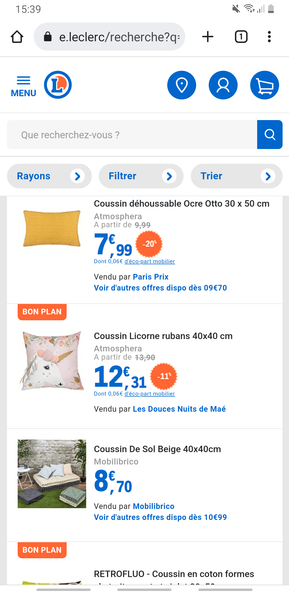
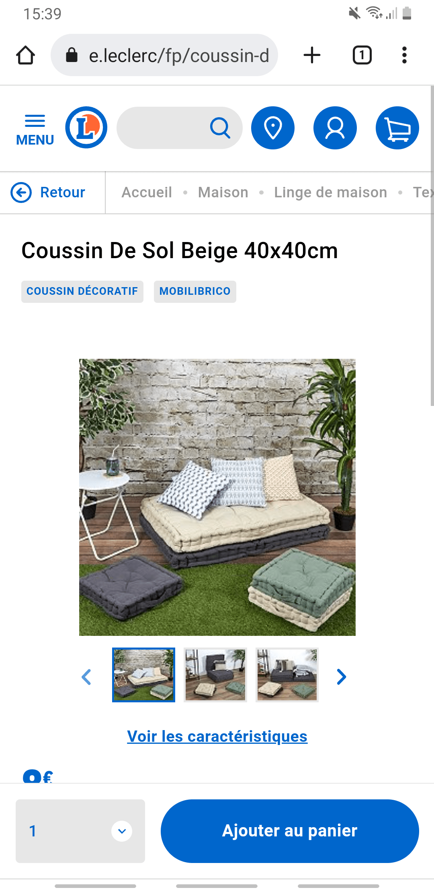
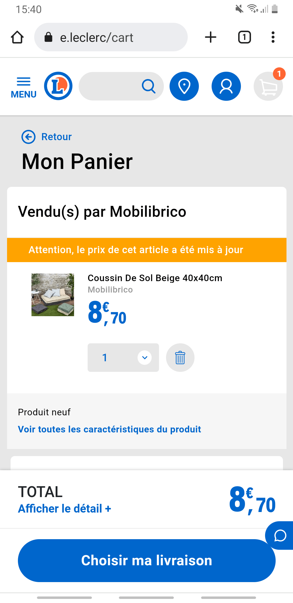
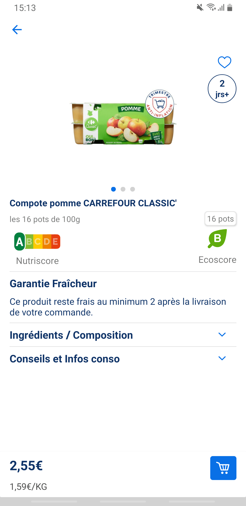
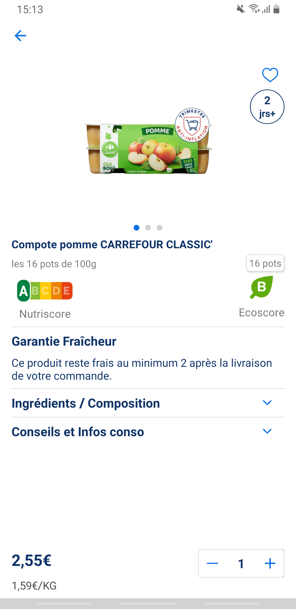
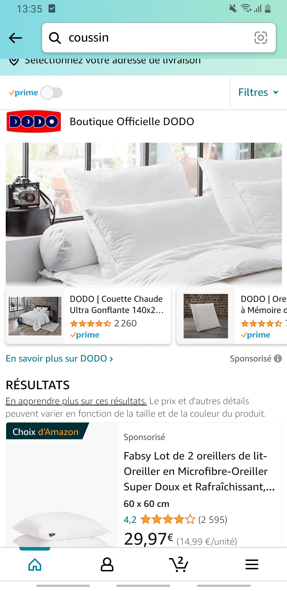
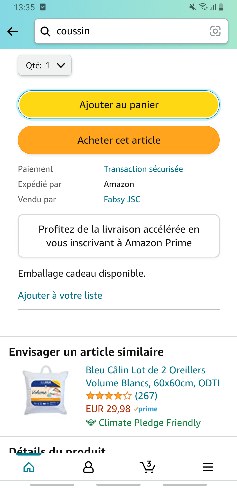

Étude en partenariat avec LSA
Consulter notre interviewLe marché du e-commerce en France en 2022 s’élevait à 146,7 milliards d’euros de chiffre d’affaires. C’est une croissance en hausse de 13,8% par rapport à 2021. Bien que le chiffre d’affaires (CA) des ventes de produits soit en recul par rapport à l’année précédente, la hausse considérable (+36%) du CA des ventes de services soutient la croissance globale du secteur du e-commerce.
Accès rapides
Méthode de sélection des sites web et applications
Définition du parcours utilisateur
Classement de l’empreinte environnementale des 10 sites web
Projections des impacts carbone
Classement de l’empreinte environnementale des 10 applications
Tableaux des résultats
Méthodologie
On comptait 2,3 milliards de transactions effectuées sur internet en France en 2022, soit 6,5% de plus par rapport à 2021. L’inflation et la vente de services a contribué à une augmentation du panier moyen avec 6,9% d’augmentation. Il était en moyenne de 65 euros en 2022.
Cet article peut être exploité à titre de comparaison avec le précédent contenu réalisé sur le sujet en 2022. L’article portait sur les chiffres du e-commerce en 2021 et sur le classement des applications et des sites web de m-commerce du 2 ème trimestre 2021.
Le e-commerce désigne toutes les transactions effectuées sur Internet, tandis que le m-commerce désigne tous types d’achat effectué sur un site de commerce en ligne avec un appareil mobile. Le m-commerce est donc une sous-catégorie du e-commerce.
Méthode de selection des sites web et applications
Pour cette nouvelle version, nous nous sommes basés sur la mesure des 10 sites et applications de m-commerce les plus visités en France (chiffres du 4ème trimestre 2022 exposés par la Fevad). Par rapport au classement précédent, 2 acteurs font leur apparition : Rakuten et Darty. C’est eBay et ManoMano qui sortent du top 10.


Définition du parcours utilisateur
Après avoir affiné la sélection des 10 applications et sites web à mesurer, nous avons repris le parcours qui avait été défini dans l’article de l’année dernière.

Mise en place de la solution Greenspector
Nous avons utilisé notre solution innovante pour mesurer l’impact environnemental des différentes étapes du parcours utilisateur. Nous avons exécuté les tests automatisés à plusieurs reprises sur un appareil réel, ici le Samsung Galaxy Note 8. Nous avons mesuré les consommations de ressources (énergie, mémoire, données) et les temps de réponse. Ces données nous ont ensuite permis d’obtenir l’impact environnemental des applications et sites web. On vous explique tout cela en détail dans notre méthodologie.
En savoir plus sur notre solutionClassement de l’empreinte environnementale des 10 sites de m-commerce les plus visités en France
Les 3 sites les moins impactants sont : Leclerc, Leroy Merlin et Fnac.
En comparaison à l’article sorti l’année dernière, Cdiscount redescend du podium tandis que le site de la Fnac se hisse dans le top 3 des sites les moins impactants.
Les 3 sites les plus impactants sont : Amazon, Rakuten et Darty.
Le site Amazon est 2,2 fois plus impactant que le site Leclerc.
La moyenne d’impact carbone de ces 10 sites web est de 1,09gEqCO2 pour une durée moyenne du scénario (voir la méthodologie en fin d’article) de 1 minute et 58 secondes, soit l’équivalent de 5 mètres effectués en véhicule léger.

Projection des impacts carbone globaux sur un mois
Dans l’article de l’année dernière nous nous étions basés sur les chiffres exposés dans le rapport de l’ECN. Pour cette nouvelle étude nous nous sommes appuyés sur le baromètre de la Fevad enrichi par Médiamétrie afin d’être au plus proche de la réalité.
Pour cette projection, nous considérons que la part du trafic global du e-commerce est de 55% sur mobile, 39% sur PC et 6% sur tablette (source). Nous nous sommes également appuyés sur l’outil de l’ADEME pour projeter les équivalences.
Avec 16,15 millions d’utilisateurs mensuels en moyenne et une durée moyenne de visite de 5 minutes et 50 secondes, ces 10 sites e-commerce ont en moyenne un impact projeté de 172 tonnes d’EqCO2 par mois (29 tonnes sur mobiles, 139 tonnes sur PC, 4 tonnes sur tablettes). C’est l’équivalent de 20 fois la circonférence de la Terre parcourue en véhicule léger.
Projection d’impact pour le site web le plus et le moins sobre
Concernant le meilleur site web de ce classement (Leclerc) pour 14,84 millions de visites / mois ayant une durée de 3 minutes, l’impact carbone total serait de 58 tonnes d’EqCO2 par mois (9 tonnes sur mobile, 47 tonnes sur PC et 1 tonne sur tablette). C’est l’équivalent de 6 fois la circonférence de la Terre parcourue en véhicule léger.
Concernant le site web le moins bon de ce classement (Amazon) pour 38,29 millions de visites / mois ayant une durée de 8 minutes, l’impact carbone serait de 690 tonnes d’EqCO2 par mois (121 tonnes sur mobile, 553 tonnes sur PC et 15 tonnes sur tablette). C’est l’équivalent de 79 fois la circonférence de la Terre parcourue en véhicule léger.
Focus de nos experts Greenspector sur le site le plus sobre : Leclerc


Le fait que le site de Leclerc soit en tête du classement s’explique principalement par la faible consommation en énergie des étapes de visualisation du produit et de visualisation du panier. Seules les informations essentielles sont présentes sur cette page de recherche (nom des produits, prix, disponibilité). Sur la fiche produit, il y a la possibilité d’ajouter rapidement le produit au panier, et des menus déroulants sont proposés si le client souhaite plus d’informations. Ce site est également celui qui échange le moins de données pour réaliser le scénario complet.
En analysant la page des résultats de recherche des produits grâce à notre outil de mesure, on peut voir que de nombreuses bonnes pratiques sont appliquées. Il y a peu d’échanges réseaux avec 19 requêtes HTTP et un seul fichier CSS. Le chargement différé (lazy-loading) des images est appliqué.
Focus de nos experts Greenspector sur le site le moins sobre : Amazon
Le fait que le site de Amazon soit dernier du classement s’explique par les étapes de recherche et de visualisation du produit. En effet, ce site consomme beaucoup d’énergie sur ces phases. L’échange de données est également important. Il y a 2,62Mo de données échangées pour la phase de recherche, et 5,85Mo de données échangées pour la visualisation de la fiche produit. Lors de la recherche, beaucoup d’informations apparaissent (indication « Suggestions », « Sponsorisé », « Amazon Choice » ou « N°1 des ventes », nom du produit, note, nombre d’avis, prix, réduction, date de livraison). Cependant, contrairement à l’année dernière, on constate qu’il n’y a plus de vidéo publicitaire en autoplay sur cette phase. Lors de la visualisation du produit, beaucoup d’informations apparaissent également (offres, dates de livraison en cas de livraison gratuite ou accélérée, détails du produit, produits fréquemment achetés ensemble…). De plus, le client est obligé de scroller avant de pouvoir accéder et cliquer sur le bouton « Ajouter au panier ».
En rentrant plus en détail sur la page de recherche d’un produit, il y a beaucoup d’échanges réseaux avec 119 requêtes HTTP et 11 fichiers CSS. Ce sont des chiffres en hausse par rapport à l’année dernière qui étaient respectivement de 109 et 9. Le chargement différé (lazy-loading) des images n’est pas appliqué, ce qui implique un chargement des images non visibles à l’écran. Cette pratique est à proscrire, car l’utilisateur ne scrollera pas forcément jusqu’à ces images.
Classement de l’empreinte environnementale des 10 applications de m-commerce les plus visitées en France
Les 3 applications les moins impactantes sont : Carrefour, Darty et Veepee
Les 3 applications les plus impactantes sont : Amazon, Aliexpress et Leroy Merlin
Nous observons que l’application Amazon a un impact carbone 3 fois plus important que l’application Carrefour.
La moyenne d’impact carbone de ces 10 applications est de 0,81 gEqCO2 pour une durée moyenne du scénario de 1 minutes et 58 secondes, soit l’équivalent de 3 mètres effectués en véhicule léger.



L’application Carrefour tient sa place des phases de visualisation de la fiche produit et de l’ajout du produit au panier qui sont plus faibles en consommation d’énergie et en quantité de données échangées. Sur l’étape d’ajout au panier on peut expliquer cela par le fait que cette dernière ne redirige pas automatiquement vers le panier et ne génère qu’un simple changement sur le bouton d’ajout au panier qui devient un sélecteur de quantité.
Focus de nos experts sur l’application la moins sobre : Amazon

Cette année encore Amazon est à la dernière place du classement. Ce résultat s’explique une nouvelle fois par les phases de recherche et de visualisation du produit, pendant lesquelles l’application consomme beaucoup d’énergie. En termes de données échangées nous observons 4,73Mo sur l’étape de visualisation du produit (contre 0,05Mo pour Carrefour) et 4,15Mo sur l’étape recherche (contre 0,19Mo pour Carrefour).
Bilan de l’étude
Cette année encore nous observons que l’impact est près de trois fois plus important entre la plateforme la plus sobre et celle la plus impactante.
Pour faire ses achats en ligne, il vaut mieux passer par les applications que par les sites web. En effet, sur le scénario étudié, les sites web sont en moyenne 44% plus impactants. Seuls Leroy Merlin et Leclerc ont un impact carbone plus important sur application que sur le web. On rappelle tout de même que les applications ont un impact au niveau de leur téléchargement et de leurs mises à jour. Elles sont donc à privilégier seulement en cas de commandes régulières.
Nous tenons à compléter ce bilan par une observation que nous avons faite durant nos tests. En effet, nous avons observé que sur certains sites web et applications le parcours pouvait changer ou être altéré. C’est le cas pour Amazon qui a mis en place de l’AB testing. Cette méthode permet à l’application et au site web de notamment varier les affichages. Par exemple, sur la fiche descriptive d’un produit, la description peut être différente d’un utilisateur à l’autre.
Dans notre cas nous avons rencontré un phénomène de changement de parcours sur le site web d’Amazon. Lors d’un premier test nous étions redirigé directement vers le panier avec l’ajout du produit à ce dernier. Lors d’un second test effectué le lendemain nous n’étions plus redirigé automatiquement vers la page panier. À la place de cela, nous devions nous même nous rendre sur le panier en cliquant sur l’icône prévu à cet effet.
En fonction du parcours, le site ou l’application consommera plus ou moins d’énergie et échangera plus ou moins de données. L’AB testing est une fonctionnalité exploitée par de nombreuses solutions numérique dans le monde et nous le traitons dans nos automatisations de parcours grâce à notre langage GDSL. Dans le cas de notre étude nous avons bien sûr pris le soin de baser nos mesures sur un seul et même parcours.
Tableaux des résultats
Classement des 10 sites web les plus visités en France
| Ranking | URL | Ecoscore | Energy (mAh) | Data (Mo) | Requests HTTP | Carbon Impact (gEqCO2) | Water Surface (Litres) | Land use (m²) |
|---|---|---|---|---|---|---|---|---|
| 1 | https://kuroneko.io/fr/ | 94 | 4.24 | 0.14 | 2 | 0.18 | 0.04 | 0.46 |
| 2 | https://lesraisonnees.co/ | 94 | 4.08 | 0.21 | 11 | 0.19 | 0.04 | 0.45 |
| 3 | https://brawcoli.fr/ | 92 | 4.08 | 0.13 | 11 | 0.19 | 0.04 | 0.45 |
| 4 | https://solar.lowtechmagazine.com/ | 92 | 4.35 | 0.35 | 17 | 0.21 | 0.04 | 0.48 |
| 5 | https://www.pikselkraft.com/ | 91 | 4.35 | 0.11 | 3 | 0.19 | 0.04 | 0.48 |
| 6 | https://amap-chelles.net/ | 90 | 4.59 | 0.34 | 4 | 0.2 | 0.04 | 0.5 |
| 7 | https://primitive.wildandslow.fr/ | 90 | 4.1 | 0.16 | 11 | 0.19 | 0.04 | 0.45 |
| 8 | https://productfornetzero.com | 90 | 3.99 | 0.17 | 14 | 0.19 | 0.04 | 0.44 |
| 9 | https://www.mountain-riders.org/ | 90 | 4.31 | 0.23 | 19 | 0.21 | 0.04 | 0.48 |
| 10 | https://fairness.coop/ | 89 | 4.28 | 0.09 | 14 | 0.2 | 0.04 | 0.47 |
| 11 | https://jeudi.am/ | 89 | 4.47 | 0.15 | 20 | 0.22 | 0.04 | 0.5 |
| 12 | https://www.boavizta.org/ | 89 | 4.26 | 0.27 | 9 | 0.2 | 0.04 | 0.47 |
| 13 | https://lowtechlab.org/fr | 87 | 4.09 | 0.22 | 6 | 0.18 | 0.04 | 0.45 |
| 14 | https://www.gov.uk/ | 87 | 4.35 | 0.24 | 15 | 0.21 | 0.04 | 0.48 |
| 15 | https://www.treebal.green/ | 87 | 4.19 | 0.8 | 17 | 0.21 | 0.04 | 0.47 |
| 16 | https://www.boutique-natali.com/ | 86 | 4.84 | 0.44 | 25 | 0.25 | 0.04 | 0.54 |
| 17 | https://designersethiques.org/ | 85 | 4.06 | 0.28 | 17 | 0.2 | 0.04 | 0.45 |
| 18 | https://oceanfifty.com/ | 85 | 4.63 | 0.42 | 14 | 0.22 | 0.04 | 0.51 |
| 19 | https://anelym.fr/ | 84 | 4.64 | 0.17 | 23 | 0.23 | 0.04 | 0.52 |
| 20 | https://lowimpact.organicbasics.com/eur | 84 | 4.65 | 0.74 | 33 | 0.26 | 0.04 | 0.53 |
| 21 | https://www.europeansleeper.eu/en | 84 | 4.33 | 0.73 | 31 | 0.24 | 0.04 | 0.49 |
| 22 | http://www.biocoopmontreuil.fr/ | 83 | 4.75 | 0.53 | 23 | 0.24 | 0.04 | 0.53 |
| 23 | https://www.licoornes.coop/ | 82 | 4.37 | 0.17 | 28 | 0.22 | 0.04 | 0.49 |
| 24 | https://empreintedigitale.fr/ | 81 | 4.26 | 1.14 | 26 | 0.24 | 0.04 | 0.48 |
| 25 | https://www.international-alert.org/ | 81 | 4.67 | 0.83 | 28 | 0.25 | 0.04 | 0.53 |
| 26 | https://www.laboutiquedupartage.fr/ | 81 | 4.77 | 0.31 | 20 | 0.23 | 0.04 | 0.53 |
| 27 | https://www.light-communication.fr/ | 81 | 4.53 | 0.19 | 13 | 0.21 | 0.04 | 0.5 |
| 28 | https://dolo.biz/fr/ | 80 | 4.81 | 1.19 | 15 | 0.25 | 0.04 | 0.53 |
| 29 | https://www.polybion.bio/ | 80 | 4.88 | 1.02 | 10 | 0.24 | 0.04 | 0.54 |
| 30 | https://zugvoegelfestival.org/ | 79 | 4.26 | 0.52 | 44 | 0.25 | 0.04 | 0.49 |
| 31 | https://pathtech.coop/ | 77 | 4.55 | 0.66 | 6 | 0.21 | 0.04 | 0.5 |
| 32 | https://dalkia.fr/ | 76 | 4.28 | 0.89 | 38 | 0.25 | 0.04 | 0.49 |
| 33 | https://sustainablewebdesign.org/ | 76 | 4.88 | 1.02 | 43 | 0.29 | 0.05 | 0.56 |
| 34 | https://palaeyewear.com/ | 74 | 4.51 | 1.19 | 78 | 0.32 | 0.05 | 0.54 |
| 35 | https://themarkup.org/ | 73 | 5.27 | 1.13 | 14 | 0.26 | 0.05 | 0.58 |
| 36 | https://www.ademe.fr/ | 72 | 4.75 | 0.64 | 26 | 0.25 | 0.04 | 0.53 |
| 37 | https://theadccawards.ca/ | 71 | 5.46 | 0.29 | 6 | 0.24 | 0.05 | 0.6 |
| 38 | https://flowty.site/ | 63 | 6.91 | 0.35 | 21 | 0.32 | 0.06 | 0.77 |
| 39 | https://heylow.world/ | 62 | 6.14 | 0.35 | 19 | 0.29 | 0.05 | 0.68 |
| 40 | https://becolourful.co.uk/ | 60 | 6.15 | 0.23 | 15 | 0.28 | 0.05 | 0.68 |
| 41 | https://www.ec-lyon.fr/ | 59 | 5.06 | 0.81 | 43 | 0.29 | 0.05 | 0.58 |
| 42 | https://www.wholegraindigital.com/ | 58 | 8.65 | 0.65 | 25 | 0.41 | 0.08 | 0.96 |
| 43 | https://daviddaumer.com/ | 50 | 7.83 | 0.32 | 13 | 0.35 | 0.07 | 0.86 |
Classement des 10 applications les plus visitées en France
| Position | Université | URL | Ecoscore (/100) | Impact Carbone (gEqCO2) |
|---|---|---|---|---|
| 1 | ICD Paris Toulouse | https://www.icd-ecoles.com/ | 16 | 0.55 |
| 2 | EMLV Paris La Défense | https://www.emlv.fr/ | 20 | 0.84 |
| 3 | ESCE Paris | https://www.esce.fr/ | 23 | 0.49 |
| 4 | TBS Education | https://www.tbs-education.fr/ | 27 | 0.51 |
| 5 | IESEG Lille Paris | https://www.ieseg.fr/ | 27 | 0.57 |
| 6 | NEOMA Business School Reims Rouen Paris | https://neoma-bs.fr/ | 29 | 0.64 |
| 7 | ESCP Business School Paris | https://escp.eu/paris | 31 | 0.82 |
| 8 | Brest Business School | https://brest-bs.com/ | 32 | 0.35 |
| 9 | ISTEC Paris | https://istec.fr/ | 32 | 0.68 |
| 10 | South Champagne Business School (ex ESC Troyes) | https://www.scbs-education.com/ | 33 | 0.47 |
| 11 | IDRAC Business School Lyon | https://www.ecoles-idrac.com/campus/campus-lyon/ | 34 | 0.54 |
| 12 | IPAG Paris Nice | https://www.ipag.edu/ | 37 | 0.47 |
| 13 | EBS Paris | https://www.ebs-paris.fr/ | 37 | 0.51 |
| 14 | ESDES Lyon | https://www.esdes.fr/ | 38 | 0.43 |
| 15 | EM Strasbourg | https://www.em-strasbourg.com/fr | 38 | 0.54 |
| 16 | Excelia Business School (ex-La Rochelle Business School) | https://www.excelia-group.fr/a-propos-dexcelia/nos-ecoles/excelia-business-school | 39 | 0.48 |
| 17 | ESC Clermont Business School | https://www.esc-clermont.fr/ | 39 | 1.06 |
| 18 | EDHEC Business School Lille | https://www.edhec.edu/fr | 40 | 0.43 |
| 19 | Burgundy School of Business Dijon Lyon | https://www.bsb-education.com/ | 40 | 0.52 |
| 20 | Audencia Business School Nantes | https://www.audencia.com/ | 41 | 0.42 |
| 21 | ISC Paris | https://iscparis.com/ | 41 | 0.45 |
| 22 | ICN Business School Nancy Paris | https://www.icn-artem.com/ | 41 | 0.49 |
| 23 | INSEEC Paris Bordeaux Lyon | https://www.inseec.com/ | 43 | 0.41 |
| 24 | Grenoble EM | https://www.grenoble-em.com/ | 43 | 0.49 |
| 25 | Institut Mines-Télécom Business School Evry Paris | https://www.imt-bs.eu/ | 43 | 0.5 |
| 26 | SKEMA Business School Lille Paris Sophia Antipolis | https://www.skema-bs.fr/ | 47 | 0.52 |
| 27 | ISG Paris | https://www.isg.fr/campus/paris | 47 | 1.14 |
| 28 | Montpellier Business School | https://www.montpellier-bs.com/ | 49 | 0.31 |
| 29 | Rennes School of Business | https://www.rennes-sb.fr/ | 50 | 0.29 |
| 30 | Paris SB Paris | https://www.psbedu.paris/fr | 50 | 0.39 |
| 31 | HEC Paris | https://www.hec.edu/fr | 56 | 0.43 |
| 32 | EDC Paris Business School | https://www.edcparis.edu/fr/ | 57 | 0.47 |
| 33 | KEDGE Business School Bordeaux Marseille | https://kedge.edu/ | 60 | 0.26 |
| 34 | ESSCA Angers Paris Aix-en-Provence Lyon Bordeaux | https://www.essca.fr/ | 60 | 0.32 |
| 35 | EM Normandie Le Havre | https://www.em-normandie.com/fr | 61 | 0.35 |
| 36 | ESSEC Cergy-Pontoise | https://www.essec.edu/fr/ | 62 | 0.32 |
| 37 | emlyon Business School | https://em-lyon.com/ | 64 | 0.32 |
La sélection se porte sur des applications et sites dans lesquels nous pouvons définir un parcours commun. Nous avons donc écarté certains sites et apps qui présentaient un parcours trop différent de celui affiché ci-dessous. Exemple : Booking.com.
Nous avons également écarté 2 solutions basées sur l’achat entre particuliers qui sont Leboncoin et Vinted.
Pour chaque site et chaque application, mesurés sur un Samsung Galaxy Note 8 (Android 9), les mesures ont été réalisées à partir de scripts utilisant le langage GDSL (Greenspector Domain-Specific Language). Ce langage permet d’automatiser des actions à réaliser sur un téléphone. Les mesures ont été réalisées entre le 10 et 19 avril 2023.
Le scénario est défini en nous basant sur le parcours utilisateur d’achat d’un produit. Nous n’allons pas jusqu’à l’étape de paiement. Nous nous arrêtons à la visualisation du produit.
Détail du scénario commun aux 20 mesures :
-Lancement du site ou de l’application
-Pause de 30 secondes sur la page d’accueil
-Recherche d’un produit en passant par la barre de recherche, puis visualisation des produits proposés
-Sélection d’un produit, puis visualisation de ses caractéristiques (détails, avis…)
-Ajout du produit au panier
-Pause de 30 secondes sur la page du panier
Chaque mesure est la moyenne de 5 mesures homogènes (avec un écart-type faible). Les consommations mesurées sur le smartphone donné selon un réseau de type wifi peuvent être différentes sur un PC portable avec un réseau filaire par exemple. Pour chacune des itérations sur les sites internet, le cache est préalablement vidé.
Côté projection de l’empreinte, les paramètres pris en compte pour réaliser ces classements sont :
- Ratio de visualisation : 100% Smartphone
- Ratio de visualisation : 100% France
- Localisation des serveurs : 100% Monde
Découvrez comment Greenspector évalue l’empreinte environnementale d’un service numérique.